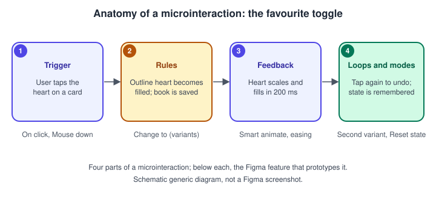
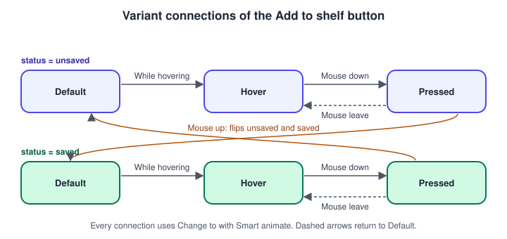
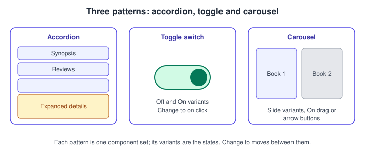
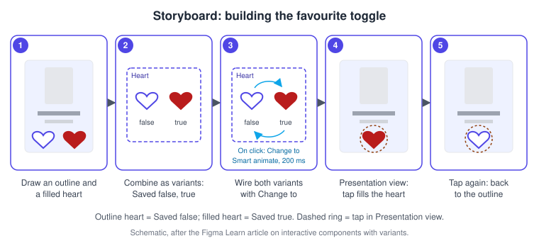

Interactive Components and Microinteractions
|
This content was generated with the assistance of AI and should be verified against the official documentation before being relied on in production. |
This page was written on 2026-10-30 against the UI3 interface of Figma Design. Interactive components are generally available on all plans, and the official article lists edit access to the file as the only requirement, which in practice means a Full seat. Viewing the result in Presentation view needs only view access. The page builds on Variants and Component Properties (the states live in a component set), Prototyping Basics (triggers and actions) and Smart Animate (the transition between two states).
The running example is the Bookshelf app. Each book card has a favourite heart, an "Add to shelf" button with hover and pressed looks, and a details section that expands. Without interactive components each of these needs several duplicated frames wired together. With them, one component holds all the states and the interactions travel with every instance.
What an interactive component is
An interactive component is a component set whose variants are connected by prototype interactions that use the Change to action. The interaction is stored inside the component, so every instance in every frame behaves the same way without extra wiring. Interactions work only between variants of the same component set.

Microinteraction principles
A microinteraction is a small, single-purpose moment: tapping a heart, pressing a button, opening a section. It is usually described with four parts, a common design vocabulary rather than a Figma feature:
-
Trigger: what starts it, a user action (click, hover, press, drag) or a system event (after a delay).
-
Rules: what happens once triggered, for example switching from Saved false to Saved true.
-
Feedback: how the change is shown, such as a colour change, a scale, or a short animation. Keep it quick; the official button tutorial uses 150 ms, inside the 150 to 300 ms range it describes as typical for web animations.
-
Loops and modes: what happens next and how it ends, such as tapping again to undo, or whether the state is remembered.
In Figma the trigger is the interaction trigger, the rules are the connections between variants, the feedback is the Smart animate transition with its easing and duration, and the loop is the return connection or the state memory described below.
Where it lives in UI3
Select a variant, open the Prototype tab of the right sidebar, and either drag the connection handle from the variant to a destination variant in the same set, or use the Interactions section: add an interaction, choose a trigger, set the action to Change to and pick the destination variant in the dropdown. The interaction panel lets you change the trigger and the animation. Preview with Presentation view; the shortcut to start it is Option Command Enter on macOS and Ctrl Alt Enter on Windows, which you should confirm in your app because shortcuts can change.
Triggers you will use most
| Trigger | Use in an interactive component |
|---|---|
On click / On tap |
Toggles, accordion headers, carousel arrows |
While hovering |
Hover look; the component returns to the original variant when the cursor leaves |
While pressing |
Pressed look held while the mouse or finger is down; returns on release |
Mouse enter / Mouse leave |
Replace the older "Mouse move inside" and "Mouse move outside", which can no longer be created |
Mouse down / Mouse up |
Press and release as separate steps, for example a drop-down that opens on down and chooses on up |
On drag |
Sliders and swipeable carousels |
After delay |
Automatic carousel advance, set in milliseconds |
The official triggers article does not say which triggers are meant specifically for interactive components, so treat the table as a practical selection rather than an official subset. On click and While hovering cannot be combined on the same hotspot; the help article suggests Mouse enter and Mouse leave for that case.
Source: Figma Learn: Prototype triggers
Variant interactions and ordinary interactions together
When a variant interaction and a normal prototype interaction share the same trigger, the normal prototype interaction runs and the variant interaction is ignored. With different triggers both run, for example a hover variant change followed by a click that navigates to the details screen. A nested instance can also carry a Change to action that switches its parent’s variant, which is how an expandable section can be opened by a button inside it.
State memory and sharing
Figma remembers the last variant that was set, even after the viewer navigates to another frame. Matching components on other frames share that state, but only after the component has been interacted with. If a design needs every visit to start fresh, tick Reset component state in the interaction’s details. Clicking a component that has a variable applied updates both the variant and the variable, so other elements bound to it change too (see Advanced Prototyping with Variables).
Overrides, editing and fonts
-
Overrides on the default variant follow the normal override rules, for example a changed label or a swapped icon. Overrides on non-default variants are not shown in Presentation view.
-
Variant interactions can be overridden on an instance. To edit the interactions of the main component, use Go to main component and edit in the source file.
-
If a variant change alters a font setting such as weight or underline, a viewer without that custom font may see Inter instead. The article recommends Google Fonts for shared prototypes; Organization and Enterprise teams can upload shared fonts.
Procedure: hover and pressed states for the Add to shelf button
The official tutorial wires a button with Smart animate, Ease in and out and a 150 ms duration, using While hovering from default to hover, Mouse down from hover to pressed, Mouse leave from pressed back to default, and Mouse up to complete the action.

-
Select the
Button/Primarycomponent set and make sure it has astateproperty with the values Default, Hover and Pressed (see the variants page). -
Select the Default variant, open the Prototype tab and add an interaction: trigger While hovering, action Change to, destination Hover, animation Smart animate, Ease in and out, 150 ms.
-
Select the Hover variant and add Mouse down, Change to, Pressed, with the same animation.
-
Select the Pressed variant and add Mouse leave, Change to, Default, so dragging off the button cancels the press.
-
Optionally add a
statusproperty with unsaved and saved values and connect Pressed to the opposite status with Mouse up, so releasing flips the button between "Add to shelf" and "Saved". -
Start Presentation view, hover and press the button, and check that the transitions are smooth.
Patterns: toggles, accordions and carousels

-
Toggle: two variants (off, on) with On click Change to in both directions.
-
Accordion: a Collapsed and an Expanded variant of the section. Put On click on the header so it switches variants; the layout shifts if the component uses auto layout, as described on Auto Layout.
-
Carousel: one variant per position, with arrow buttons using On click or the whole item using On drag. These are general patterns built from the documented building blocks, not separate Figma features.
Procedure: build the favourite toggle

-
Draw a 24 by 24 outline heart in the book card and a filled copy in the accent colour (panel 1).
-
Select both and combine them into a component set with a
Savedproperty offalseandtrue(panel 2). -
Select the
falsevariant, open the Prototype tab, and add On click, Change to,true, Smart animate, Ease out, 200 ms (panel 3). -
Select the
truevariant and add On click, Change to,false, so a second tap undoes the favourite. -
Place instances of the heart on several cards, start Presentation view, and tap one (panel 4).
-
Tap again to confirm it returns to the outline (panel 5). Navigate away and back to see that the state is remembered unless Reset component state is on.
Common mistakes
-
Using the same trigger for a variant interaction and a normal interaction, so the variant one is silently ignored.
-
Wiring variants that belong to different component sets; Change to works only inside one set.
-
Expecting overrides on non-default variants to appear in Presentation view.
-
Combining On click and While hovering on one hotspot instead of Mouse enter and Mouse leave.
-
Animations so long that the interface feels slow; keep feedback short.
-
Forgetting that state is remembered across frames, which confuses reviews of a prototype.
Where older guides are outdated
Older books describe interactive components as the newest feature, and use the previous interface; UI3 has been the only interface since 2025-04-30. They use the trigger names "Mouse move inside" and "Mouse move outside", which became Mouse enter and Mouse leave and can no longer be created. They also predate conditionals and expressions for richer state (see the advanced prototyping page), and Figma Motion, a keyframe timeline for animation (see Figma Motion). Source: Figma release notes